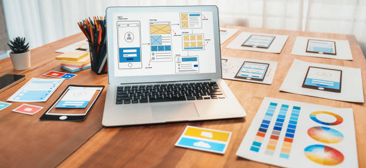
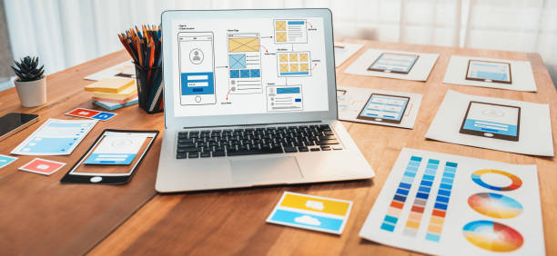

Onoh Benjamin Ndubuisi
Frontend Developer|JavaScript|React
About Me
"I am a passionate frontend developer with a strong focus on creating responsive, user-friendly, and visually appealing web applications. Proficient in modern frameworks like React and Vue, I specialize in translating designs into pixel-perfect interfaces while ensuring optimal performance. With a keen eye for detail and a dedication to enhancing user experience, I thrive on building accessible and engaging digital solutions."
My Skill Set
 

HTML and CSS
I have a strong foundation in HTML and CSS, using them to create clean, semantic, and accessible web pages. I am proficient in crafting responsive designs, ensuring that websites look and perform well across different devices and screen sizes. I have experience with modern CSS methodologies such as Flexbox, Grid, and frameworks like Bootstrap, enabling me to build visually appealing layouts efficiently. I also focus on maintaining clean, reusable, and scalable stylesheets.
JavaScript
With a solid understanding of JavaScript, I have worked on creating dynamic and interactive web applications. I am experienced with ES6+ features, enabling me to write modern, efficient, and readable code. From implementing DOM manipulation and event handling to integrating APIs for dynamic content, I ensure functionality aligns with user needs. Additionally, you have experience using libraries or frameworks such as jQuery and are exploring or working with more advanced frameworks like React or Next.js.
WordPress
I have hands-on experience building and customizing websites using WordPress, including working with pre-designed themes and creating custom themes to meet specific client requirements. My expertise includes configuring plugins, managing content, optimizing website performance, and ensuring SEO best practices. I am adept at leveraging WordPress’s flexibility to create websites tailored to various industries, ensuring ease of use for non-technical users.
UI/UX Design
I have a keen eye for design and an understanding of user-centric design principles. By focusing on creating intuitive and aesthetically pleasing user interfaces, I ensure that users have a seamless experience while interacting with websites or applications. I have experience with wireframing and prototyping tools (e.g., Figma, Adobe XD) and incorporate feedback loops to refine designs iteratively. I balance creativity with functionality, ensuring designs are both visually appealing and accessible.